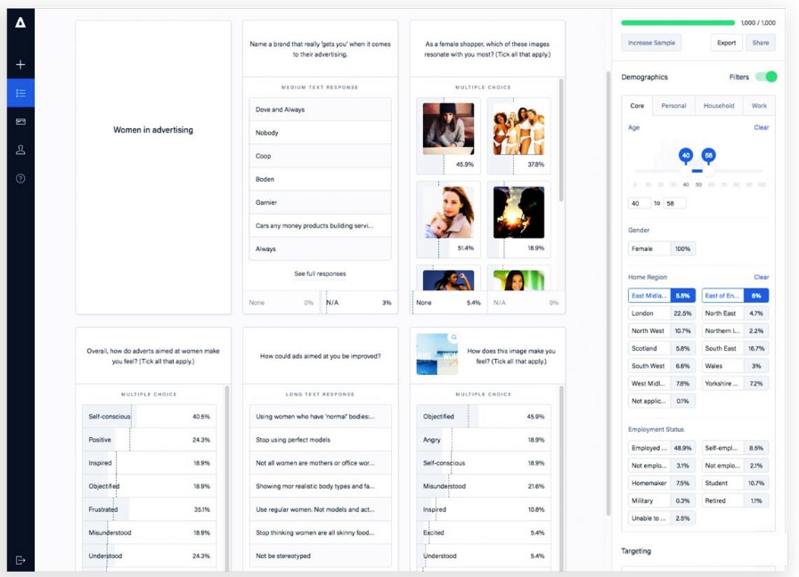

When you work hard on creating the ultimate product, completing it often comes with a huge misjudgment. All that effort put into its creation makes you think: ‘’People will fight to get in line to buy my product!’’
This is a very common fallacy in the SaaS business world. It’s a bias that occurs as soon as your product, the one you’ve been working so hard on, is ready to be presented to the world.
At this point, you need something to bring you to reality and allow you to be impartial about your product. Something that allows you to view the product as your target audience will, people who haven’t seen it before.
The thing that will help you with this is your market size. Knowing your market size can help you tweak your strategies, set reasonable pricing, and better understand the user.
What Is Market Size?
Market size is a vital component of marketing and strategic planning. By knowing the size of your market i.e. the buyer persona, you can better estimate and assess the opportunity. Data obtained through market size research will allow you to accurately plan your investments, strategies, and approaches.
According to Alexa, market size is:
‘’The number of individuals in a certain market segment who are potential buyers’’.
Estimating the market size includes more than demographics. To understand the market size, you need to make a distinction between two things:
- Addressable market i.e. people that you might reach with your service and product, and
- Available market i.e. the portion that you can complete – realistically speaking
Plenty of things can and should affect your research of the market site. There’s the matter of time – what’s the timeframe you need to use for this? Next is demographics – what parts of the world does your SaaS business cover? And of course, there are changes in the market that happened, are happening, or you can anticipate right now.
How to determine your market size
Nowadays, it is no longer complicated to calculate market size potential. The results from this research are extremely valuable. Accessing the market size will give you valuable answers that allow you to achieve the growth you desire for your SaaS business.
Your marketing strategies, financial plans, and future actions become clearer this way. You’ll know what to invest in and where. But first, you need to measure the market size.
How is this done?
Market size is a measurement of the volume of your market. To make this easier and more accurate, you need to be clear on what you’re measuring. How you approach this depends on your time, requirements, expectations, and budget.
There’s also the matter of what type of data you’ll use for this. Do you already have some data to use or do you plan to get it from scratch? To calculate the market size, you need to look for data on the number of transactions or potential customers. Your product can appeal to an endless number of people or a limited number.
You can gather data with some desk research, but that is often not enough. The Labor bureau and census bureau offer a lot of information, but you will also need to complete additional research. Thankfully, tools like Attest available today will give you access to over 100 million people from 80 different countries. Such tools can make this process much, much easier.

Still, the main question that people ask these days is: WHY?
Why should you determine the market size?
Reasons why determining the market size is important
Knowing your market size can be very useful for your SaaS business. Here are the 6 most prominent reasons:
1. Determine the product’s potential
When you turned an idea into a product by working hard and investing, it’s hard to separate yourself from your feelings. This is your baby, which makes you very unrealistic when it comes to its potential. The bias you’re having right now can lead to overestimating its potential, setting too high a price, or using the wrong strategies to sell it.
By knowing the market size, you’re gaining more objectivity. This helps you figure out if your product has potential and if it does – how big it is. It will also show you if this is too big of an investment risk or not. This helps you move forward and reduces the chances of big financial mistakes.
2. …As well as your company’s market potential
An estimate of the market size is well worth it for a big reason. Such data contains useful information that will give you a chance at a very accurate guess regarding your company’s chances in the market.
Chances are, your product is not unique. There are alternatives to it – all industries have them. By knowing the market size, you can better guess if your company has high odds of succeeding in the market and beating the competition. Market size is key for determining your company’s potential.
3. Puts you in the best position to use market opportunities
The SaaS market is very crowded right now. When you figure out which people make your target audience realistically, you can better find the market opportunities to grab. You can’t just aim to take advantage of every trend that happens in the industry. Knowing who you can turn into a lead and who you can’t give you a chance to invest both your time and money into the right opportunities.
4. Circumvents your mindset and eliminates bias
You’re probably thinking that your product will amaze everyone. People will love it, so the word will spread around soon and everyone will use it. But, thinking that the entire addressable market will jump to this opportunity is a big mistake. It’s also a big leap that most likely won’t happen.
This is why you need to be impartial – to understand the difference between the addressable and available market. It helps you be more realistic and eliminates bias. When you know how many people and which people you can realistically reach with your strategies, you’ll be more unbiased toward it.
Essentially, this gives you a better chance at the right decision.
5. Develop more accurate pricing, marketing, and distribution strategies
Knowing the market size allows you to use it. How? You can use it to develop more reasonable prices. Your bias can make you raise the price and make it unattainable for the target buyer. Your knowledge of the market, in general, can convince you to make it too low, while you can charge more. The market size can help you decide what the best price for your products is.
Market size insight can help SaaS companies to find the sweet spot in the competitive niche and develop a more loyal, wider following. You’ll have an advantage over people who spend money on marketing and distribution simply based on guesses.
6. Better understand your target demographic
This type of research might not be all about demographics, but for the most part, it is. Do you understand the preferences of your target market? When you conduct research that allows you to understand the market size, you’ll get valuable insight into your demographic.
Even the tiniest data such as trend studies, visual preferences, and spending habits can tell you a lot about your target demographics. This can positively impact and alter the development, marketing, and patenting of your products.
Making a choice: how to calculate the market size
Basically, you can choose between two approaches to do this (or combine them both):
- Top-down approach
Taking a top-down approach means that you gather intelligence from a central source. This intelligence includes data on the total size of the SaaS industry, combined with some logic and guessing.
Let’s take an example.
You have a SaaS tool for consultancies and agencies that offer SEO services. What’s the total size of that particular industry? According to The Business Research Company, the SEO industry was estimated at $47.5 billion in 2020. When you see this report, you’ll also learn what this includes. Many things don’t fit your product’s capabilities. For example, you don’t include the option to buy email lists. This reduces your market size.
You start at the top i.e. the $65 billion and you move downwards, eliminating things that don’t fit into your picture.
- Bottom-up approach
Alternatively, you can go the other way around. In this case, you infer the market size based on the estimated number of customers.
Let’s make an example of this now.
Say that your company now creates a mobile CRM tool to be used by freelancers. The global CRM market is estimated to reach $80 billion by 2025. But, you’re offering a product in the mobile market specifically. The estimates for this are $15 billion worldwide by the end of 2021.
These statistics aren’t for freelancers only, right? So, you need to consider the number of freelancers only. Then, you need to make an estimate – what percentage of them will you capture? If your market is the US alone, there were 57 million freelancers in 2019 on this territory. If you capture at least 1% of them, this adds up to around 600 thousand customers.
Final thoughts
An estimate of your market size is a foundation for wise choices and informed decisions. Every SaaS business needs to be aware of why this is important and know how to calculate it. Whichever method you choose, remember your goal – it is to get the big picture and make smart decisions for your products.
Author’s Bio:
Nadica Metuleva is a freelance writer who’s passionate about creating quality original content. She holds a Master’s degree in English teaching and a Bachelor’s degree in translation. With 7 years of experience in the freelance writing industry, Nadica has become proficient in creating content that captivates the audience, drives growth, and educates.
Leave a Reply